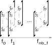
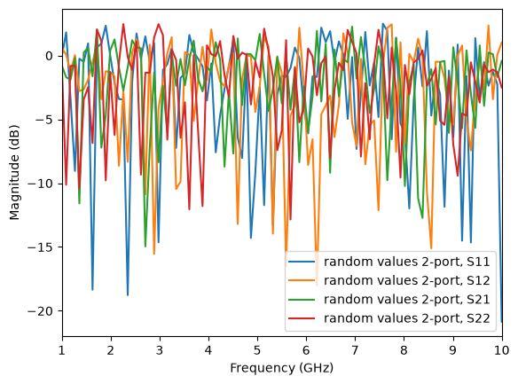
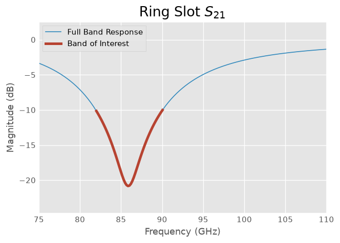
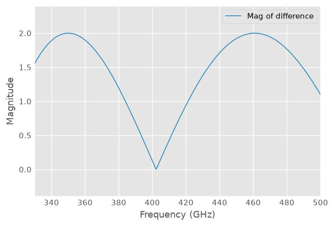
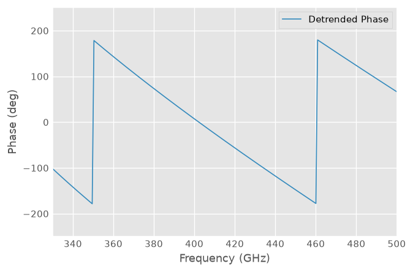
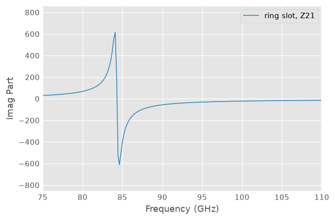

Networks#
Introduction#
This tutorial gives an overview of the microwave network analysis features of skrf. For this tutorial, and the rest of the scikit-rf documentation, it is assumed that skrf has been imported as rf. Whether or not you follow this convention in your own code is up to you.
[1]:
import numpy as np
import skrf as rf
If this produces an import error, please see Installation.
Creating Networks#
skrf provides an object for a N-port microwave Network. A Network can be created in a number of ways:
from a Touchstone file
from S-parameters
from Z-parameters
from other RF parameters (Y, ABCD, T, etc.)
Some examples for each situation is given below.
Creating Network from Touchstone file#
Touchstone file (.sNp files, with N being the number of ports) is a de facto standard to export N-port network parameter data and noise data of linear active devices, passive filters, passive devices, or interconnect networks. Creating a Network from a Touchstone file is simple:
Note that some software, such as ANSYS HFSS, add additional information to the Touchstone standard, such as comments, simulation parameters, Port Impedance or Gamma (wavenumber). These data are also imported if detected.
A short description of the network will be printed out if entered onto the command line
[3]:
[3]:
2-Port Network: 'ring slot', 75.0-110.0 GHz, 201 pts, z0=[50.+0.j 50.+0.j]
Creating Network from s-parameters#
Networks can also be created by directly passing values for the frequency, s-parameters (and optionally the port impedance z0).
The scattering matrix of a N-port Network is expected to be a Numpy array of shape (nb_f, N, N), where nb_f is the number of frequency points and N the number of ports of the network.

[4]:
# dummy 2-port network from Frequency and s-parameters
freq = Frequency(1, 10, 101, 'ghz')
rng = np.random.default_rng()
s = rng.uniform(size=(101, 2, 2)) + 1j*rng.uniform(size=(101, 2, 2)) # random complex numbers
# if not passed, will assume z0=50. name is optional but it's a good practice.
ntwk = Network(frequency=freq, s=s, name='random values 2-port')
ntwk
[4]:
2-Port Network: 'random values 2-port', 1.0-10.0 GHz, 101 pts, z0=[50.+0.j 50.+0.j]
[5]:

Often, s-parameters are stored in separate arrays. In such case, one needs to forge the s-matrix:
[6]:
# let's assume we have separate arrays for the frequency and s-parameters
f = np.array([1, 2, 3, 4]) # in GHz
S11 = rng.uniform(size=4)
S12 = rng.uniform(size=4)
S21 = rng.uniform(size=4)
S22 = rng.uniform(size=4)
# Before creating the scikit-rf Network object, one must forge the Frequency and S-matrix:
freq2 = rf.Frequency.from_f(f, unit='GHz')
# forging S-matrix as shape (nb_f, 2, 2)
# there is probably smarter way, but less explicit for the purpose of this example:
s = np.zeros((len(f), 2, 2), dtype=complex)
s[:,0,0] = S11
s[:,0,1] = S12
s[:,1,0] = S21
s[:,1,1] = S22
# constructing Network object
ntw = rf.Network(frequency=freq2, s=s)
print(ntw)
2-Port Network: '', 1.0-4.0 GHz, 4 pts, z0=[50.+0.j 50.+0.j]
If necessary, the characteristic impedance can be passed as a scalar (same for all frequencies), as a list or an array:
[7]:
ntw2 = rf.Network(frequency=freq, s=s, z0=25, name='same z0 for all ports')
print(ntw2)
ntw3 = rf.Network(frequency=freq, s=s, z0=[20, 30], name='different z0 for each port')
print(ntw3)
ntw4 = rf.Network(frequency=freq, s=s, z0=rng.uniform(size=(4,2)), name='different z0 for each frequencies and ports')
print(ntw4)
2-Port Network: 'same z0 for all ports', 1.0-10.0 GHz, 101 pts, z0=[25.+0.j 25.+0.j]
2-Port Network: 'different z0 for each port', 1.0-10.0 GHz, 101 pts, z0=[20.+0.j 30.+0.j]
2-Port Network: 'different z0 for each frequencies and ports', 1.0-10.0 GHz, 101 pts, z0=[0.76594509+0.j 0.30047553+0.j]
From z-parameters#
As networks are also defined from their Z-parameters, there is from_z() method of the Network:
[8]:
1-Port Network: '', 1.0-10.0 GHz, 101 pts, z0=[50.+0.j]
From other network parameters: Y, ABCD, H, T#
It is also possible to generate Networks from other kind of RF parameters: Y, ABCD, H or T using the y=, a=, h= or t= parameters
respectively when creating a Network.
For example, the ABCD parameters of a series-impedance is:
so the associated Network can be created like:
[9]:
2-Port Network: '', 1.0-10.0 GHz, 101 pts, z0=[50.+0.j 50.+0.j]
Note that convenience functions are also available for converting some parameters into another if required:
from:nbsphinx-math:to |
S |
Z |
Y |
ABCD |
T |
H |
|---|---|---|---|---|---|---|
S |
|
|
|
|
|
|
Z |
|
|
|
|
|
|
Y |
|
|
|
|||
ABCD |
|
|
||||
T |
|
|
|
|||
H |
|
|
[10]:
[10]:
np.True_
Basic Properties#
The basic attributes of a microwave Network are provided by the following properties :
Network.s: Scattering Parameter matrix.Network.z0: Port Characteristic Impedance matrix.Network.frequency: Frequency Object.
The Network object has numerous other properties and methods. If you are using IPython, then these properties and methods can be ‘tabbed’ out on the command line.
In [1]: ring_slot.s<TAB>
ring_slot.line.s ring_slot.s_arcl ring_slot.s_im
ring_slot.line.s11 ring_slot.s_arcl_unwrap ring_slot.s_mag
...
All of the network parameters are represented internally as complex numpy.ndarray. The s-parameters are of shape (nfreq, nport, nport):
[11]:
[11]:
(201, 2, 2)
Slicing#
You can slice the Network.s attribute any way you want.
[12]:
ring_slot.s[:11,1,0] # get first 10 values of S21
[12]:
array([0.6134571 +0.36678139j, 0.6218194 +0.36403169j,
0.63024301+0.36109574j, 0.63872415+0.3579682j ,
0.64725874+0.35464377j, 0.65584238+0.35111711j,
0.66447037+0.34738295j, 0.6731377 +0.34343602j,
0.68183901+0.33927115j, 0.69056862+0.33488321j,
0.6993205 +0.3302672j ])
Slicing by frequency can also be done directly on Network objects like so
[13]:
ring_slot[0:10] # Network for the first 10 frequency points
[13]:
2-Port Network: 'ring slot_subset', 75.0-76.575 GHz, 10 pts, z0=[50.+0.j 50.+0.j]
or with a human friendly string,
[14]:
ring_slot['80-90ghz']
[14]:
2-Port Network: 'ring slot', 80.075-90.05 GHz, 58 pts, z0=[50.+0.j 50.+0.j]
Notice that slicing directly on a Network returns a Network. So, a nice way to express slicing in both dimensions is
[15]:
ring_slot.s11['80-90ghz']
[15]:
1-Port Network: 'ring slot', 80.075-90.05 GHz, 58 pts, z0=[50.+0.j]
Plotting#
Amongst other things, the methods of the Network class provide convenient ways to plot components of the network parameters,
Network.plot_s_db: plot magnitude of s-parameters in log scaleNetwork.plot_s_deg: plot phase of s-parameters in degreesNetwork.plot_s_smith: plot complex s-parameters on Smith Chart…
If you would like to use skrf’s plot styling,
[16]:
%matplotlib inline
rf.stylely()
To plot all four s-parameters of the ring_slot on the Smith Chart.
[17]:

Combining this with the slicing features,
[18]:
from matplotlib import pyplot as plt
plt.title('Ring Slot $S_{21}$')
ring_slot.s11.plot_s_db(label='Full Band Response')
ring_slot.s11['82-90ghz'].plot_s_db(lw=3,label='Band of Interest')

For more detailed information about plotting see Plotting.
Arithmetic Operations#
Element-wise mathematical operations on the scattering parameter matrices are accessible through overloaded operators. To illustrate their usage, load a couple Networks stored in the data module.
[19]:
[19]:
1-Port Network: 'wr2p2,short', 330.0-500.0 GHz, 201 pts, z0=[50.+0.j]
All of these operations return Network types. For example, to plot the complex difference between short and delay_short,
[20]:
difference = (short - delayshort)
difference.plot_s_mag(label='Mag of difference')

Another common application is calculating the phase difference using the division operator,
[21]:
(delayshort/short).plot_s_deg(label='Detrended Phase')

Linear operators can also be used with scalars or an numpy.ndarray that have the same length as the Network.
[22]:
hopen = (short*-1)
hopen.s[:3,...]
[22]:
array([[[1.-0.j]],
[[1.-0.j]],
[[1.-0.j]]])
[23]:
rando = hopen *rng.uniform(size=len(hopen))
rando.s[:3,...]
[23]:
array([[[0.78302745+0.j]],
[[0.92238818+0.j]],
[[0.31484461+0.j]]])
Comparison of Network#
Comparison operators also work with networks:
[24]:
short == delayshort
[24]:
False
[25]:
short != delayshort
[25]:
True
Cascading and De-embedding#
Cascading and de-embeding 2-port Networks can also be done through operators. The cascade function can be called through the power operator, **. To calculate a new network which is the cascaded connection of the two individual Networks line and short,
[26]:
short = rf.data.wr2p2_short
line = rf.data.wr2p2_line
delayshort = line ** short
De-embedding can be accomplished by cascading the inverse of a network. The inverse of a network is accessed through the property Network.inv. To de-embed the short from delay_short,
[27]:
short_2 = line.inv ** delayshort
short_2 == short
[27]:
True
The cascading operator also works for to 2N-port Networks. This is illustrated in this example on balanced Networks. For example, assuming you want to cascade three 4-port Network ntw1, ntw2 and ntw3, you can use: resulting_ntw = ntw1 ** ntw2 ** ntw3. Note that the port scheme assumed by the ** cascading operator with 4-port networks is:
ntw1 ntw2 ntw3
+----+ +----+ +----+
0-|0 2|--|0 2|--|0 2|-2
1-|1 3|--|1 3|--|1 3|-3
+----+ +----+ +----+
More documentation on Connecting Network is available here: Connecting Networks.
Connecting Multi-ports#
skrf supports the connection of arbitrary ports of N-port networks. It accomplishes this using an algorithm called sub-network growth[1], available through the function connect().
As an example, terminating one port of an ideal 3-way splitter can be done like so,
[28]:
[28]:
3-Port Network: 'tee', 330.0-500.0 GHz, 201 pts, z0=[50.+0.j 50.+0.j 50.+0.j]
To connect port 1 of the tee, to port 0 of the delay short,
[29]:
terminated_tee = rf.network.connect(tee, 1, delayshort, 0)
terminated_tee
[29]:
2-Port Network: 'tee', 330.0-500.0 GHz, 201 pts, z0=[50.+0.j 50.+0.j]
Note that this function takes into account port impedances. If two connected ports have different port impedances, an appropriate impedance mismatch is inserted.
More information on connecting Networks is available here: connecting Networks.
For advanced connections between many arbitrary N-port Networks, the Circuit object is more relevant since it allows defining explicitly the connections between ports and Networks. For more information, please refer to the Circuit documentation.
Port names#
The ports of a Network can be given names with Network.port_names. A named port can then be used anywhere a port index is accepted, and the names follow the ports they describe through operations which reorder, drop or combine ports.
Version note
Port names can only be used this way in versions after 2.0.1. In version 2.0.1 and earlier, Network.port_names is a plain attribute which most operations do not keep up to date, and it cannot be used to address a port.
Names are given either when the Network is created, or by assigning to the property afterwards. There has to be a name for every port.
[30]:
freq = rf.Frequency(1, 10, 11, unit='GHz')
media = rf.media.DefinedGammaZ0(frequency=freq, z0_port=50)
amp = media.attenuator(-10, name='amp')
amp.port_names = ['in', 'out']
amp.port_names
[30]:
['in', 'out']
[31]:
s = np.zeros((freq.npoints, 2, 2), dtype=complex)
s[:, 0, 1] = s[:, 1, 0] = 10 ** (-3 / 20)
pad = rf.Network(frequency=freq, s=s, name='pad', port_names=['rf_in', 'rf_out'])
pad.port_names
[31]:
['rf_in', 'rf_out']
A Network without named ports has port_names set to None.
[32]:
None
Connecting by name#
connect() takes a port name in place of a port index and the output Network keeps the names of the ports which are left over.
[33]:
cascade = rf.network.connect(amp, 'out', pad, 'rf_in')
cascade.port_names
[33]:
['in', 'rf_out']
This is the same connection as the one made by indices, names are just another way of selecting a port.
[34]:
cascade == rf.network.connect(amp, 1, pad, 0)
[34]:
True
innerconnect(), parallelconnect(), subnetwork() and renumber() accept names the same way.
[35]:
tee = rf.data.tee.copy()
tee.port_names = ['sum', 'a', 'b']
tee.subnetwork(['a', 'sum']).port_names
[35]:
['a', 'sum']
In renumber() a name refers to the port which currently carries it, so the call below swaps the ports named sum and b.
[36]:
tee.renumbered(['sum', 'b'], ['b', 'sum']).port_names
[36]:
['b', 'a', 'sum']
Names follow the ports#
A one-port taken out of a network is either a reflection coefficient, which is one of the ports and keeps its name, or a transmission coefficient, which is not any single port of the network and therefore has no name.
[37]:
['in']
['out']
None
The same one-ports can be picked out by name instead of by number.
[38]:
amp['in', 'in'].port_names
[38]:
['in']
Mixed mode#
se2gmm() replaces pairs of single ended ports with a differential and a common mode port. Each new port is named after the pair it is made of, so the names stay unique and say where the port came from.
[39]:
line_p = media.line(50, 'deg', name='p')
line_n = media.line(70, 'deg', name='n')
pair = rf.network.concat_ports([line_p, line_n], port_order='second')
pair.port_names = ['in+', 'in-', 'out+', 'out-']
pair.port_names
[39]:
['in+', 'in-', 'out+', 'out-']
[40]:
mm = pair.copy()
mm.se2gmm(p=2)
mm.port_names
[40]:
['d(in+,in-)', 'd(out+,out-)', 'c(in+,in-)', 'c(out+,out-)']
The differential insertion loss is then addressable by name.
[41]:
mm['d(in+,in-)', 'd(out+,out-)'].s_db[:, 0, 0]
[41]:
array([-0.13297082, -0.13297082, -0.13297082, -0.13297082, -0.13297082,
-0.13297082, -0.13297082, -0.13297082, -0.13297082, -0.13297082,
-0.13297082])
gmm2se() reverses the conversion and restores the single ended names.
[42]:
mm.gmm2se(p=2)
mm.port_names
[42]:
['in+', 'in-', 'out+', 'out-']
Duplicate names#
Several ports may share a name, which happens for instance when a Touchstone file names them that way, or when connect() joins two networks which both have a port called in. Such a name cannot be used to address a port, since it does not identify one, and those ports have to be given by index instead.
[43]:
amp2 = amp.copy()
amp2.name = 'amp2'
# the two ports named 'out' are the ones consumed, both 'in' ports are left
back_to_back = rf.network.connect(amp, 'out', amp2, 'out')
back_to_back.port_names
[43]:
['in', 'in']
Asking for a port by an ambiguous name raises rather than silently returning the first match.
[44]:
try:
back_to_back['in', 'in']
except ValueError as err:
print(err)
Port name 'in' is ambiguous, network has ports ['in', 'in']. Use the port index instead
Interpolation and Concatenation#
A common need is to change the number of frequency points of a Network. To use the operators and cascading functions the networks involved must have matching frequencies, for instance. If two networks have different frequency information, then an error will be raised,
[45]:
from skrf.data import wr2p2_line1 as line1
line1
[45]:
2-Port Network: 'wr2p2,line1', 330.0-500.0 GHz, 101 pts, z0=[50.+0.j 50.+0.j]
line1+line
---------------------------------------------------------------------------
IndexError Traceback (most recent call last)
<ipython-input-49-82040f7eab08> in <module>()
----> 1 line1+line
/home/alex/code/scikit-rf/skrf/network.py in __add__(self, other)
500
501 if isinstance(other, Network):
--> 502 self.__compatible_for_scalar_operation_test(other)
503 result.s = self.s + other.s
504 else:
/home/alex/code/scikit-rf/skrf/network.py in __compatible_for_scalar_operation_test(self, other)
701 '''
702 if other.frequency != self.frequency:
--> 703 raise IndexError('Networks must have same frequency. See `Network.interpolate`')
704
705 if other.s.shape != self.s.shape:
IndexError: Networks must have same frequency. See `Network.interpolate`
This problem can be solved by interpolating one of Networks along the frequency axis using Network.resample.
[46]:
line1.resample(201)
line1
[46]:
2-Port Network: 'wr2p2,line1', 330.0-500.0 GHz, 201 pts, z0=[50.+0.j 50.+0.j]
And now we can do things
[47]:
line1 + line
[47]:
2-Port Network: 'wr2p2,line1', 330.0-500.0 GHz, 201 pts, z0=[50.+0.j 50.+0.j]
You can also interpolate from a Frequency object. For example,
[48]:
[48]:
2-Port Network: 'wr2p2,line', 330.0-500.0 GHz, 201 pts, z0=[50.+0.j 50.+0.j]
A related application is the need to combine Networks which cover different frequency ranges. Two Networks can be concatenated (aka stitched) together using stitch, which concatenates networks along their frequency axis. To combine a WR-2.2 Network with a WR-1.5 Network,
[49]:
from skrf.data import wr1p5_line, wr2p2_line
big_line = rf.network.stitch(wr2p2_line, wr1p5_line)
big_line
/home/alex/code/scikit-rf-docs/skrf/frequency.py:287: InvalidFrequencyWarning: Frequency values are not monotonously increasing!
To get rid of the invalid values call `drop_non_monotonic_increasing`
temp_freq.check_monotonic_increasing()
[49]:
2-Port Network: 'wr2p2,line', 330.0-750.0 GHz, 402 pts, z0=[50.+0.j 50.+0.j]
Reading and Writing#
For long term data storage, skrf has support for reading and partial support for writing touchstone file format. Reading is accomplished with the Network initializer as shown above, and writing with the method Network.write_touchstone().
For temporary data storage, skrf object can be pickled with the functions skrf.io.general.read and skrf.io.general.write. The reason to use temporary pickles over touchstones is that they store all attributes of a network, while touchstone files only store partial information.
[50]:
rf.io.write('data/myline.ntwk',line) # write out Network using pickle
Warning
Pickling methods can’t support long term data storage because they require the structure of the object being written to remain unchanged. something that cannot be guaranteed in future versions of skrf. (see http://docs.python.org/2/library/pickle.html)
Frequently there is an entire directory of files that need to be analyzed. rf.read_all creates Networks from all files in a directory quickly. To load all skrf files in the data/ directory which contain the string 'wr2p2'.
[52]:
dict_o_ntwks = rf.io.read_all(rf.data.pwd, contains = 'wr2p2')
dict_o_ntwks
[52]:
{'wr2p2,delayshort': 1-Port Network: 'wr2p2,delayshort', 330.0-500.0 GHz, 201 pts, z0=[50.+0.j],
'wr2p2,line': 2-Port Network: 'wr2p2,line', 330.0-500.0 GHz, 201 pts, z0=[50.+0.j 50.+0.j],
'wr2p2,line1': 2-Port Network: 'wr2p2,line1', 330.0-500.0 GHz, 101 pts, z0=[50.+0.j 50.+0.j],
'wr2p2,short': 1-Port Network: 'wr2p2,short', 330.0-500.0 GHz, 201 pts, z0=[50.+0.j]}
Other times you know the list of files that need to be analyzed. rf.read_all also accepts a files parameter. This example file list contains only files within the same directory, but you can store files however your application would benefit from.
[53]:
import os
dict_o_ntwks_files = rf.io.read_all(
files=[os.path.join(rf.data.pwd, test_file) for test_file in ['ntwk1.s2p', 'ntwk2.s2p']]
)
dict_o_ntwks_files
[53]:
{'ntwk1': 2-Port Network: 'ntwk1', 1.0-10.0 GHz, 91 pts, z0=[50.+0.j 50.+0.j]}
Other Parameters#
This tutorial focuses on s-parameters, but other network representations are available as well. Impedance and Admittance Parameters can be accessed through the parameters Network.z and Network.y, respectively. Scalar components of complex parameters, such as Network.z_re, Network.z_im and plotting methods are available as well.
Other parameters are only available for 2-port networks, such as wave cascading parameters (Network.t), and ABCD-parameters (Network.a) or Hybrid parameters (Network.h).
[54]:
ring_slot.z[:3,...]
[54]:
array([[[0.88442687+28.15350224j, 0.94703504+30.46757222j],
[0.94703504+30.46757222j, 1.0434417 +43.45766805j]],
[[0.91624901+28.72415928j, 0.98188607+31.09594438j],
[0.98188607+31.09594438j, 1.08168411+44.17642274j]],
[[0.94991736+29.31694632j, 1.01876516+31.74874257j],
[1.01876516+31.74874257j, 1.12215451+44.92215712j]]])
[55]:
ring_slot.plot_z_im(m=1,n=0)

References#
[1] Compton, R.C.; , “Perspectives in microwave circuit analysis,” Circuits and Systems, 1989., Proceedings of the 32nd Midwest Symposium on , vol., no., pp.716-718 vol.2, 14-16 Aug 1989. URL: http://ieeexplore.ieee.org/stamp/stamp.jsp?tp=&arnumber=101955&isnumber=3167
[ ]: